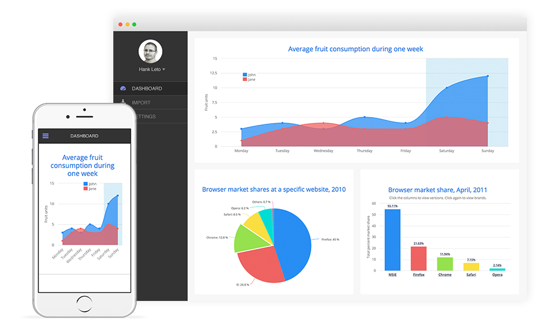
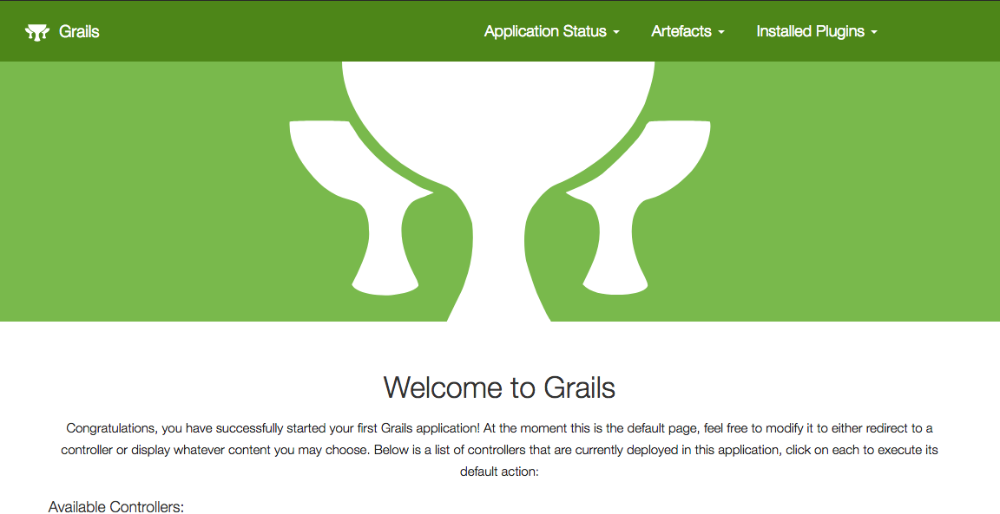
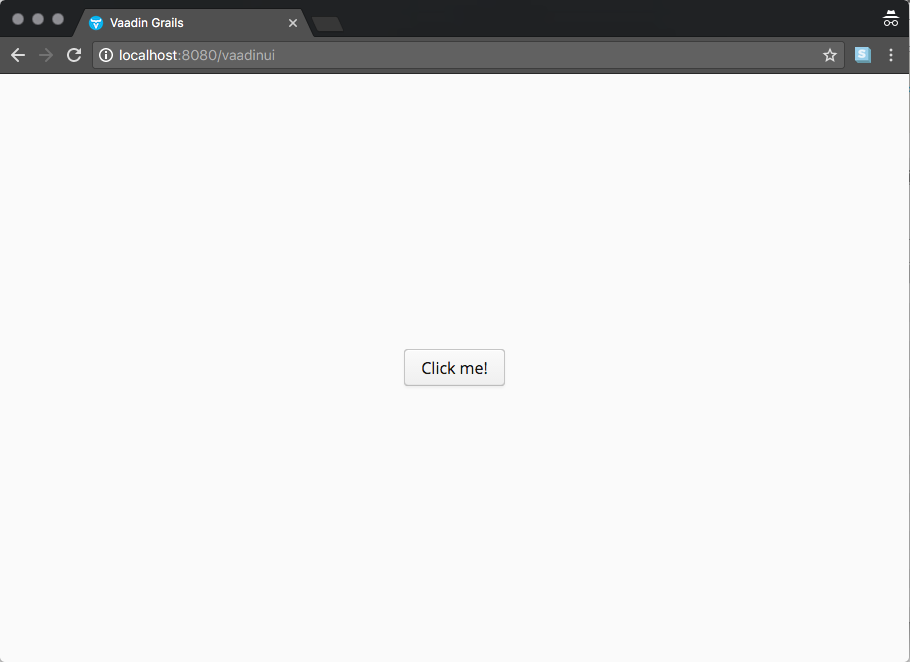
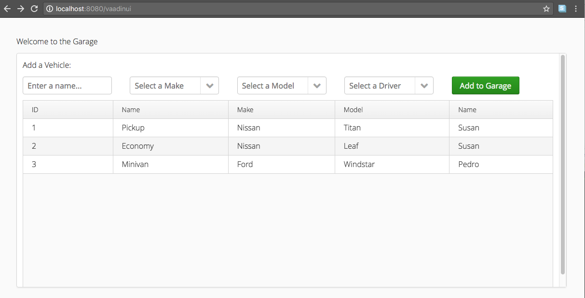

Build a Grails 3 application with the Vaadin 8 Framework
Learn how to build a Grails 3 application with the Vaadin 8 Framework
Authors: Ben Rhine
Grails Version: 4
1 Grails Training
2 Getting Started
In this guide you are going to build a Grails application with the Vaadin 8 Framework.
2.1 What you will need
2.2 How to complete the guide
2.3 Vaadin 8 Grails Profile
The initial directory of this project was created with the command
grails create-app demo --profile me.przepiora.vaadin-grails:web-vaadin8:0.3We supply to the create-app command the Vaadin 8 Grails Profile's coordinates.
With the use of application profiles, Grails allows you to build modern web applications. There are profiles to facilitate the construction of REST APIs or Web applications with a Javascript front-end (Angular, REACT) or Vaadin apps.
3 About Vaadin
Vaadin is Java Web UI Framework for Business Applications.
With Vaadin Framework, you’ll use a familiar component based approach to build awesome single page web apps faster than with any other UI framework. Forget complex web technologies and just use Java or any other JVM language. Only a browser is needed to access your application - no plugins required.

| The Vaadin 8 Grails profile allows you mix Vaadin endpoints and traditional Grails endpoints. |
On the one hand, we are going to have endpoints which will be handled by Grails Controllers. They will render HTML, JSON or XML using GSP or Grails Views.
On the other hand, we are going to have Vaadin endpoints. We will develop the UI using Java or Groovy, and we will connect to the Grails service layer directly.
If you require additional information on Vaadin, please check out the official documentation here. Additionally, you may find a fair number of examples in an older version of Vaadin, and this page gives a good explanation of how some of these features have been updated in Vaadin 8.
4 Running the Application
At this point a test run is suggested just to make sure everything is functioning properly.
To run the application first
$ cd initial/To launch the application, run the following command.
$ ./gradlew bootRunIf everything is good to go this will start up the Grails application,
which will be running on http://localhost:8080

To see Vaadin in action navigate to http://localhost:8080/vaadinUI instead.

5 Writing the Application
5.1 Creating the domain
Lets start by creating our domain model for the application.
$ grails create-domain-class demo.Driver
$ grails create-domain-class demo.Make
$ grails create-domain-class demo.Model
$ grails create-domain-class demo.User
$ grails create-domain-class demo.VehicleNow let’s edit our domain classes under grails-app/domain/demo/. We’ll add some properties and the three following annotations.
-
@GrailsCompileStatic- Code that is marked withGrailsCompileStaticwill all be statically compiled except for Grails specific interactions that cannot be statically compiled but that GrailsCompileStatic can identify as permissible for dynamic dispatch. These include things like invoking dynamic finders and DSL code in configuration blocks like constraints and mapping closures in domain classes. -
@EqualsAndHashCode- Auto generates equals and hashCode methods -
@ToString- Auto generates toString method
link:../snippets/grails-app/domain/demo/Make.groovy[role=include]link:../snippets/grails-app/domain/demo/Model.groovy[role=include]link:../snippets/grails-app/domain/demo/Vehicle.groovy[role=include]There is a bit more to our Driver.groovy than meets the eye versus the first 3 classes. That’s
because we are actually extending our User.groovy class with driver. This will grant us
some extra flexibility in the future as we grow our application.
link:../snippets/grails-app/domain/demo/Driver.groovy[role=include]link:../snippets/grails-app/domain/demo/User.groovy[role=include]5.2 Bootstrap Data
Now that our domain is in place, lets preload some data to work with.
link:../snippets/grails-app/init/demo/BootStrap.groovy[role=include]5.3 Creating the service layer
Next lets create our service layer for our application so Grails and Vaadin can share resources.
$ grails create-service demo.DriverService
$ grails create-service demo.MakeService
$ grails create-service demo.ModelService
$ grails create-service demo.VehicleServiceNow let’s edit our service classes under grails-app/services/demo/.
We’ll add a listAll() method to all of the classes. This method will have the following additional annotation.
-
@ReadOnly- good practice to have on methods that only return data
link:../snippets/grails-app/services/demo/DriverService.groovy[role=include]link:../snippets/grails-app/services/demo/MakeService.groovy[role=include]link:../snippets/grails-app/services/demo/ModelService.groovy[role=include]Our VehicleService.groovy has an additional save() method so that we can add new data to our application.
link:../snippets/grails-app/services/demo/VehicleService.groovy[role=include]5.4 Creating a controller
While completely unnecessary for Vaadin we want to demonstrate that there is no conflict between Grails controllers and the Vaadin Framework.
$ grails create-controller demo.GarageControllerNow let’s edit our controller under grails-app/controllers/demo/. We will import one of our services, update our index method, and add the following annotation.
-
@GrailsCompileStatic- Code that is marked withGrailsCompileStaticwill all be statically compiled except for Grails specific interactions that cannot be statically compiled but that GrailsCompileStatic can identify as permissible for dynamic dispatch. These include things like invoking dynamic finders and DSL code in configuration blocks like constraints and mapping closures in domain classes.
link:../snippets/grails-app/controllers/demo/GarageController.groovy[role=include]| 1 | Declaring our service |
| 2 | index() calls our service and renders the output as JSON |
At this point lets make sure everything is working properly and run [runningTheApp] the application.
Now we can exercise the API using cURL or another API tool.
Make a GET request to /garage to get a list of Vehicles:
$ curl -X "GET" "http://localhost:8080/garage"
[{"id":1,"driver":{"id":1},"make":{"id":1},"model":{"id":1},"name":"Pickup"},
{"id":2,"driver":{"id":1},"make":{"id":1},"model":{"id":2},"name":"Economy"},
{"id":3,"driver":{"id":2},"make":{"id":2},"model":{"id":3},"name":"Minivan"}]If data comes back everything is setup and connected properly at this point and we have verified that we have some test data. Now lets look at how to attach Vaadin to Grails
5.5 Vaadin
Finally time to start adding Vaadin code to our application!
Consider src/main/groovy/demo/DemoGrailsUI.groovy to be your Vaadin
controller / dispatcher as it will help you understand the Vaadin flow. Our init()
method is the applications entry point to Vaadin itself, this is your top level view
essentially. From here you can setup navigation and other whole app view components.
Our DemoGrailsUI.groovy as it currently is, is great for a
single page web application but its not the most flexible if we want to add navigation
components or other pages later on. With this in mind we are going to make it a bit more
flexible using views. Using views is also beneficial in helping keep our Vaadin frontend
well organized.
| For more information on views and navigation with Vaadin look here. |
link:../snippets/src/main/groovy/demo/DemoGrailsUI.groovy[role=include]| 1 | We add the @Title annotation to give our window / tab a nice name |
| 2 | Add @SpringViewDisplay so we can use views |
| 3 | Along with and implements ViewDisplay to our class |
| 4 | Next create an additional panel for our UI |
| 5 | Initial entry point into our Vaadin View |
| 6 | Helper method for building our header |
| 7 | Additional function required for using views; dynamically controls setting our view components |
| The order in which you add components to the layout, can determin their position within the layout. |
init() can get quite large quite fast so it is best to break out UI components
into their own methods like buildHeader() to keep your files clear and concise.
|
5.6 Adding your view
Now to add the view which is the bulk of our Vaadin code. Create a new file located in
src/main/groovy/demo called GarageView.groovy.
Next make the necessary updates.
link:../snippets/src/main/groovy/demo/GarageView.groovy[role=include]| 1 | Add @SpringView annotation and set the name so that your view can be found. |
| 2 | The view should extend the layout style that is desired |
| 3 | Set the actual view name |
| 4 | Services will not be injected automatically into Vaadin Views. You need to use @Autowired annotation in order to get dependency injection to work properly. |
| 5 | Tells the view init() to execute after the main UI init() |
| 6 | Loads Vehicles and its associations eagerly. |
The usage of eager loading in the vehicleService.listAll(false) warrants further explanation.
When a Vaadin component calls a Grails service, once the service method completes, the Hibernate session is closed which means that any associations not loaded by the query could lead to a LazyInitializationException due to the closed session.
It is therefore critical that your queries always return the data that is required to render the view. This typically leads to better performing queries anyway and will in fact help you design a better performing application.
| Grails auto dependency injection is not able to detect services in Vaadin, thus we require using the more traditional Spring annotation @Autowired in order to get dependency injection to work properly. |
Our view is trying to mimic the layout of much of modern web design by making use of "Rows" in our case we have 3 rows, a header, data collection, and data display (grid). As we develop a pattern start to emerge in Vaadin for views.
-
Create layout
-
Create UI component
-
Add UI component to layout
-
Add layout to view
When adding layout to the view you can just use addComponent() as it is aware that it is
adding to itself, unlike the top level UI where root.addComponent() is required.
To keep a clean file continue building each UI component as its own private method.
Once we have built our UI components now we need to be able to interact with them. To do this
we add listeners to our components making use of groovy closures to specify what would happen
when an event occurs. In our case we are updateVehicle() which we then submit()
link:../snippets/src/main/groovy/demo/GarageView.groovy[role=include]Using the listeners we build the vehicle object which is then submitted when the button is clicked. The last line of our submit method reloads our view to refresh the newly updated data.
link:../snippets/src/main/groovy/demo/GarageView.groovy[role=include]Now that everything is in place return to [runningTheApp] to run your app. If everything is as it should be you will see the following.

6 Next Steps
There’s plenty of opportunities to expand the scope of this application. Here are a few ideas for improvements you can make on your own:
-
Create a modal dialog form to add new
Driver,Makes&Modelsinstances. Use Vaadin’s Sub-Windows to give you a head start. -
Add support for updates to existing
Vehicleinstances. A modal dialog might work well for this as well, or perhaps an editable table row -
Currently
Make&Modeldomain classes are not related to each other. Adding an association between them, will allow us to display Models for the currently selectedMakein the dropdowns. You will want to make use of the JavaScript Array.filter method. -
Currently, views contain direct references to services. Although it’s completely fine for a demo or a small application, things will tend to get out of hand when our codebase grows. Patterns such as Model-View-Presenter (MVP) may help to keep an organized codebase. You can read more about patterns and Vaadin in the Book of Vaadin